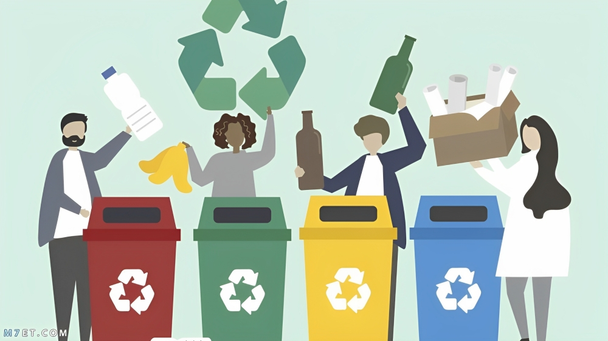
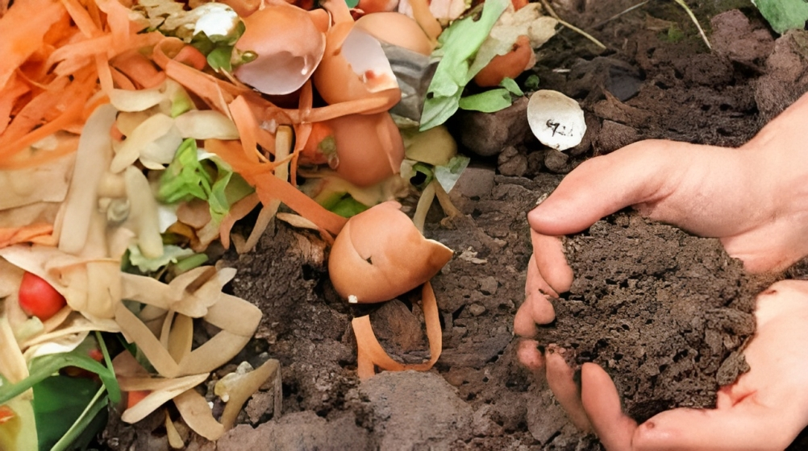
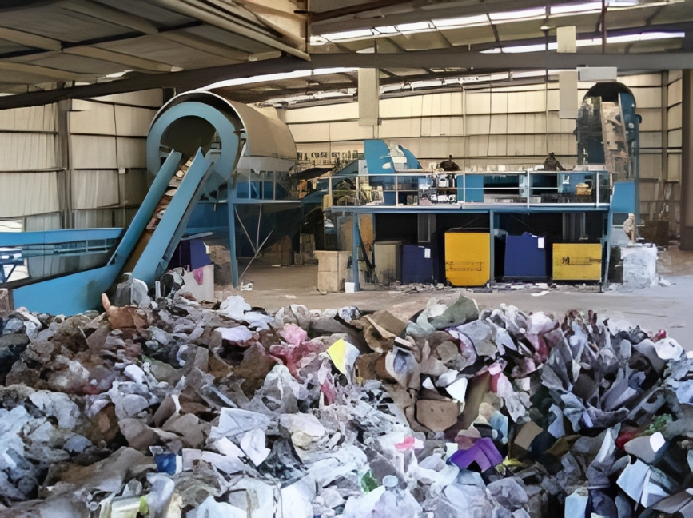

أهم طريقة للتخفيف من النفايات هي التقليل من إنتاج هذه النفايات، وتشمل استعمال المنتجات المستعملة، وتصليح المعطلة بدلا من شراء جديدة، واستعمال الاكياس والاكواب متعددة الاستعمال بدلا من البلاستيكية وحيدة الاستعمال، وتصميم المنتجات من قبل المنتجين بطريقة تسهل إعادة تدويرها.
هي عملية مراقبة وجمع ونقل ومعالجة وتدوير أو تخلص من النفايات، يستخدم هذا المصطلح عادة للنفايات التي تنتج من قبل نشاطات بشرية، وتقوم الدول بهذه العملية لتخفيف الآثار السلبية للنفايات على البيئة والصحة والمظهر العام.
ــ الحصول على بيئة أفضل، حيث إنه تساهم وحدات التخلص من النفايات في رفاهية الناس بشكل غير مباشر من خلال مساعدتهم على التخلص من الأمراض الناتجة عن تراكم النفايات بشكل عشوائي. ــ حفاظ على الطاقة، فإن في إعادة التدوير بعض من أنواع النفايات يساعدنا في تقليل استخدام مصادر الطاقة المختلفة في تطبيق باقي أنواع طرق التخلص من النفايات. ــ خلق فرص العمل، ففي صناعة إعادة التدوير هناك العديد من الشواغر سوف تتوفر لإتمام العملية الصناعية، مع وجود الكثير من الأشخاص المتبنين لهذه الممارسة الصديقة للبيئة يساعد على توفر دعم كبير لهذه المجال من ناحية الدعم المادي على وجه الخصوص والتثقيفي.
هي عملية إعادة تدوير للمواد العضوية مثل النبات وفضلات الطعام والمنتجات الورقية، إذ يمكن إعادة تدويرها إلى سماد بيولوجي والتي يستخدم في عمليات التحلل العضوي في الزراعة. والغاز الناتج عن هذه العملية هو غاز الميثان الذي يستخدم إنبعاثه في توليد الطاقة الكهربائية. إن الغاية من هذه العملية هو تسريع تحلل المواد العضوية. طرق التحلل البيولوجي مختلفة فهناك الهوائية واللاهوائية وهناك طرق هجينة بين الطريقتين السابقتين
مكن استخدام النفايات بشكل مباشر للحصول على وقود ويمكن أيضا إعادة معالجتها للحصول على نوع اخر من الوقود. ويُسمى ذلك استرداد الطاقة أو جلب الطاقة من النفاياتقوم تحويل المواد الصلبة والسائلة والغازية إلى طاقة عن طريق توليد البخار والتحول الحراري والتغوير والتوربينات ويمكن أيضا تحوليها إلى الكربون النشط وقوس البلازما
أهم طريقة للتخفيف من النفايات هي التقليل من إنتاج هذه النفايات، وتشمل استعمال المنتجات المستعملة، وتصليح المعطلة بدلا من شراء جديدة، واستعمال الاكياس والاكواب متعددة الاستعمال بدلا من البلاستيكية وحيدة الاستعمال، وتصميم المنتجات من قبل المنتجين بطريقة تسهل إعادة تدويرها
تختلف طرق جمع النفايات بين المدن والدول، وهذه الخدمة غالبا ما تقدمها السلطات الحكومية المحلية أو من قبل القطاع الصناعي الخاص. في استراليا تتبع الحكومة طريقة جمع النفايات من جانب الطريق وتقدم لكل منزل ثلاث حاويات قمامة: واحدة للمواد القابلة لإعادة التدوير وواحدة للمواد العضوية وواحدة للنفايات العامة. في أوروبا في البنايات توجد قنوات تدفع فيها القمامة إلى أسفل البنايات حيث يوجد هناك محتوى كبير للقمامة تسمى هذه الطريقة جمع النفايات بالضغط. في كندا تتبع الحكومة طريقة جمع النفايات من جانب الطريق أيضا وتطبق نظام ثلاث حاويات قمامة في معظم المناطق
دون إدخال تحسينات على هذا القطاع، من المرجح أن تزيد الانبعاثات المرتبطة بالنفايات الصلبة إلى 2.6 مليار طن من مكافئ ثاني أكسيد الكربون بحلول عام 2050 وسيساعد تحسين إدارة النفايات المدن على الصمود في مواجهة حالات المناخ المتطرفة التي تتسبب في الفيضانات وتدمير البنية التحتية ونزوح المجتمعات وفقدان سبل العيش
إن فهم مقدار وموقع توليد النفايات - وكذلك أنواع النفايات المتولدة - يسمح للحكومات المحلية بتخصيص الميزانية والأرض بشكل واقعي، وتقييم التقنيات ذات الصلة، والنظر في الشركاء الاستراتيجيين لتقديم الخدمات، مثل القطاع الخاص أو المنظمات غير الحكومية.
في عصر التوسع السريع في المدن ونمو السكان، تعتبر إدارة النفايات الصلبة مهمة للمدن والمجتمعات المستدامة والصحية والشاملة. وإذا لم يتم اتخاذ أي إجراء، فسيكون العالم على طريق خطير نحو مزيد من الهدر والتلوث المدمر. وستدفع أرواح البشر وسبل العيش والبيئة ثمنًا أعلى مما هو عليه اليوم. يوجد بالفعل العديد من الحلول لعكس مسار هذا الاتجاه. فالمطلوب هو العمل العاجل على جميع مستويات المجتمع.